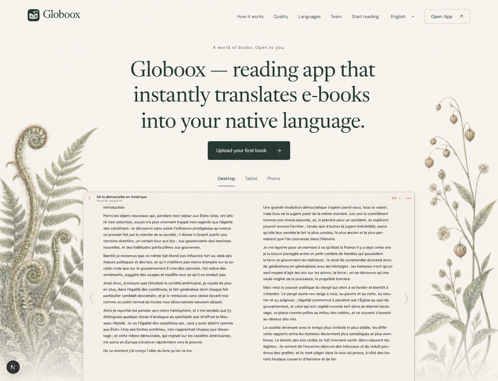
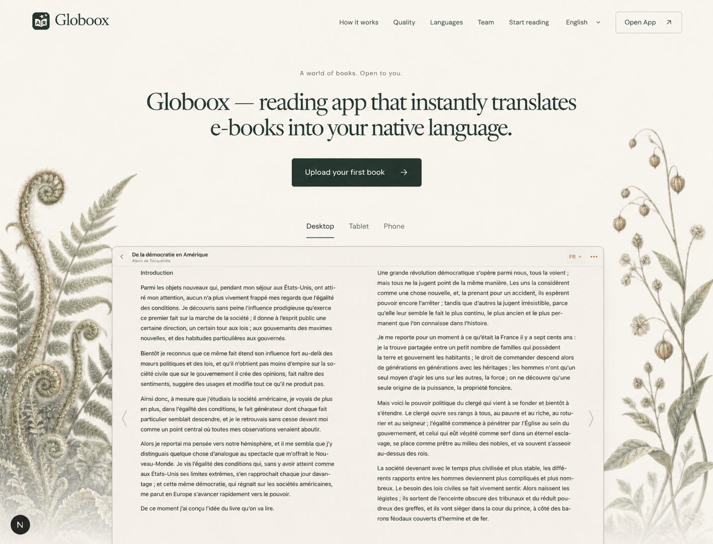

Globoox / Typography studies / 7 September 2026
Three independent built-in ImageGen outputs, shown in conversation order. Exploration only; none selected or implemented. The current landing remains unchanged. Product images inside generated mocks are references only.
Review and provenance
Current live baseline
Original reference; unchanged.

1 · Open three lines
Calmer upright setting; the large uniform text block remains.

2 · Compact two lines
More space for product; generated tracking is too tight.

3 · Sentence hierarchy
More meaningful emphasis; generated headline is too heavy.